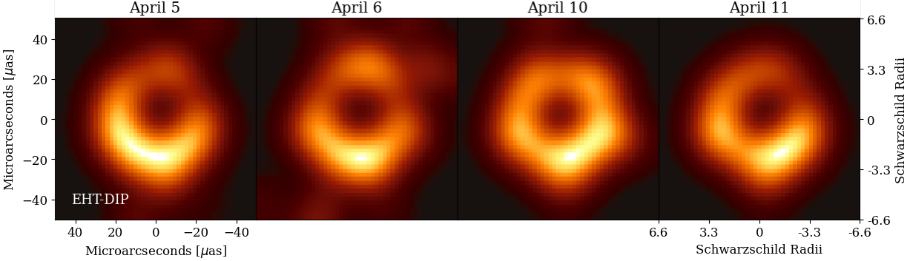

Interferometric image reconstruction using an untrained U-Net as a structural prior, with Student's-t robust data fidelity and nonparametric bootstrap uncertainty quantification.
A principled Bayesian imaging pipeline tailored to the sparse, long-baseline interferometry of the EHT.
Heavy-tailed loss (ν = 3) for visibility amplitudes and closure phases, resistant to outliers from calibration errors and RFI.
Exact separable Non-Uniform DFT maps pixel images to arbitrary (u,v) points without interpolation artifacts.
Differentiable compactness, inner-void (shadow), flux conservation, and centroid penalties encode astrophysical priors.
Poisson or Dirichlet multiplier resampling over B replicates yields per-pixel 1σ uncertainty images without parametric assumptions.
Load any of the four included EHT 2017 M87 epochs and reconstruct in a few lines.
import numpy as np
from eht_dip_enhanced3_bootstrapping2 import reconstruct_eht_dip
data = dict(np.load("SR1_M87_2017_095_lo_hops_netcal_StokesI.npz"))
image = reconstruct_eht_dip(
data_dict = data,
npix = 64,
pixel_size = 2.0, # μas / pixel
device = "mps", # or "cuda" / "cpu"
num_iter = 10000,
amp_weight = 1.5,
cp_weight = 1.0,
lambda_tsv = 10,
use_t_amp = True, t_nu_amp = 3,
use_t_cp = True, t_nu_cp = 3,
lambda_compact = 0.5, r_compact_uas = 40,
lambda_void = 1e-2, r_void_uas = 7,
init_gaussian = True, gauss_fwhm_uas = 20,
blur_sigma0_pix = 2.0, blur_decay_iters = 3000,
learn_global_scale = True, global_scale_init = 0.6,
save_dir = "results/",
save_every = 400,
)
# image: np.ndarray, shape (64, 64)Four calibrated Stokes I visibility datasets spanning the 2017 EHT observing campaign.
| Day | File | Band | Pipeline | Calibration |
|---|---|---|---|---|
| 095 | SR1_M87_2017_095_lo_hops_netcal_StokesI.npz | lo | HOPS | Network |
| 096 | SR1_M87_2017_096_lo_hops_netcal_StokesI.npz | lo | HOPS | Network |
| 100 | SR1_M87_2017_100_lo_hops_netcal_StokesI.npz | lo | HOPS | Network |
| 101 | SR1_M87_2017_101_lo_hops_netcal_StokesI.npz | lo | HOPS | Network |
Each file contains arrays u, v, vis, vsigma, cphase,
sigmacp, u1, v1, u2, v2.
See Usage for the full data format specification.